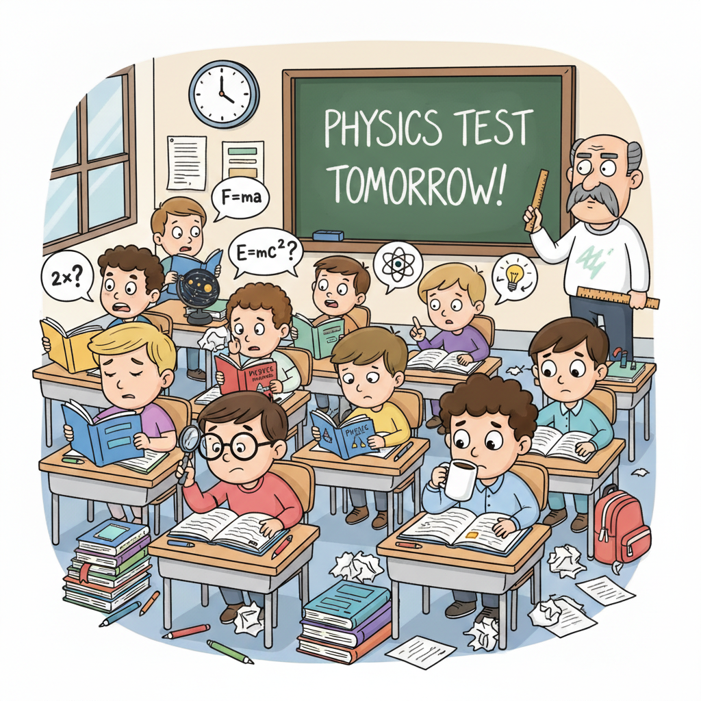

Готуємося до контрольної роботи з теми:
“Тиск твердих тіл, рідин та газів”
Матеріали для опрацювання

Відкрити оригінал у високій якості
Завдання для самоперевірки
Варіант №1
Перейти до Google Docs
Варіант №2
Незабаром
Варіант №3
Незабаром
Варіант №4
Незабаром